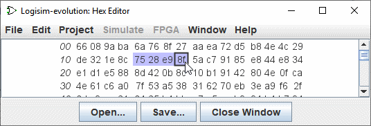

十六进制编辑器
Logisim 包含一个集成的十六进制编辑器，用于查看和编辑存储器的内容。要访问它，请打开存储器组件的弹出菜单（在组件上右键单击），然后选择| 编辑内容…… |，或者在属性中选择内容。

左侧斜体数字显示存储器地址，以十六进制书写。其他数字显示从该存储器地址开始的值；十六进制编辑器每行可能显示四个、八个或十六个值，具体取决于窗口大小。为便于计数，每四个值一组之间留有较大间距。
可以使用滚动条或键盘（方向键、Home、End、Page Up 和 Page Down）在存储器中导航。输入十六进制字符会更改当前选定的值。
可以通过拖动鼠标、按住 Shift 键单击鼠标，或在按住Shift键的同时用键盘移动来选择一段连续的值。使用| 编辑 |菜单或相应快捷键（Ctrl-C、Ctrl-V、Ctrl-X……）可以复制、粘贴或剪切；剪贴板内容也可以传递给其他应用程序。
通过两个按钮（打开……、保存……）可以从文件加载数据，或将数据保存到文件。
下一节：弹出菜单和文件。